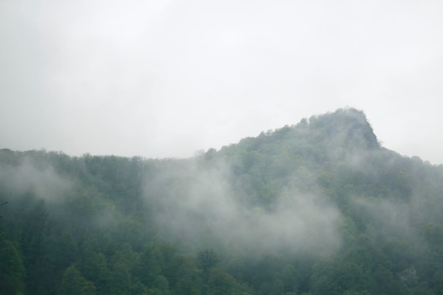

2. Regla de los tercios
La rejilla roja marca los "puntos de fuerza" de cada imagen (ver apartado 9 del tema). Sustituye las dos imágenes de ejemplo por otras tuyas y comprueba si el sujeto principal cae cerca de alguno de esos puntos.
Todos los iconos deben tener el mismo tamaño y estilo, y una alternativa de texto para las personas que no puedan verlos (apartado 8.2 del tema).
La rejilla roja marca los "puntos de fuerza" de cada imagen (ver apartado 9 del tema). Sustituye las dos imágenes de ejemplo por otras tuyas y comprueba si el sujeto principal cae cerca de alguno de esos puntos.
Para cada imagen, indica qué ángulo crees que se ha usado (normal, contrapicado, picado, nadir o cenital) y en qué tipo de página web lo usarías.

¿En qué tipo de web usarías este ángulo, y por qué?
La imagen del paisaje usa un ángulo normal.. Añadiéndole el paisaje, me transmite serenidad o misterio o frío. Lo usaría como fondo de la primera sección de una web de turismo o trekking.

¿En qué tipo de web usarías este ángulo, y por qué?
La imagen del avión usa un ángulo normal. AUnque la foto sea del cielo, las proporciones no buscan dar una perspectiva que engrandezca alguna parte del avión. Lo usaría en cualquier tipo de página web, posiblemente relacionado a la aeronáutica

¿En qué tipo de web usarías este ángulo, y por qué?
La imagen de las flores usa un ángulo picado, o quizás normal ligeramente inclinado hacia abajo. Lo usaría en algun portafolio de fotografía, o algo editorial, porque es la sensación que transmite. Usualmente fotografías para por ejemplo tiendas o comercios suelen tener un fondo blanco donde el objeto se ditingue claramente, por ejemplo.
TODO 4: en 3-4 líneas, explica por qué es mejor usar una fuente de iconos en vez de imágenes sueltas para los iconos de una web. Relaciona tu respuesta con el apartado 8 del tema.
Usar una fuente de íconos es mejor que usar imágenes o iconos sueltos porque permite consistencia en los estilos de los íconos, y tener un solo lugar donde buscar íconos en el futuro.
Asimismo la fuente, dependiendo de cual sea, puede facilitar la velocidad y experiencia de desarrollo.